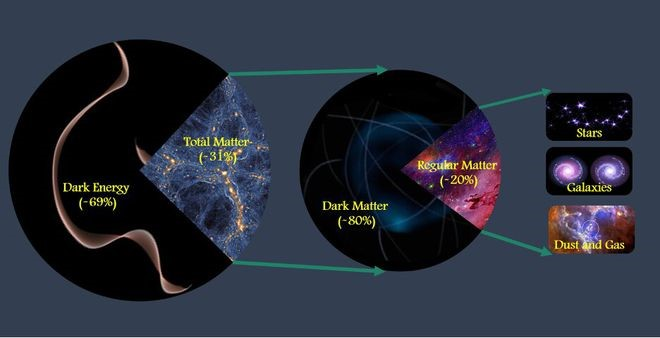

Matéria Escura
Matéria Escura – O maior mistério da astrofísica.
Últimos Artigos:

As Estrelas são corpos celestes que têm luz própria
Estrelas são grandes esferas de plasma, mantidas por sua própria gravidade. As estrelas emitem luz, calor e outros tipos de radiação em razão dos
Últimos Artigos:

As Estrelas são corpos celestes que têm luz própria
Estrelas são grandes esferas de plasma, mantidas por sua própria gravidade. As estrelas emitem luz, calor e outros tipos de radiação em razão dos

Foto de galáxia divulgada pela NASA em homenagem ao aniversário de 30 anos do lançamento do telescópio espacial Hubble. (NASA/Reprodução)
O espaço sempre foi objeto de estudo e curiosidade para a humanidade já que chega a ser assustador o quão pouco sabemos sobre ele, é como se fossemos pequenos passarinhos querendo descobrir o imenso mundo fora de seu ninho.
e, por mais que nas últimas décadas os estudos sobre a galáxia tenham evoluído, alguns elementos demonstram que ainda temos muito a descobrir e repensar sobre antigas descobertas, um exemplo disso é a matéria escura, um elemento que fez os cientistas até mesmo questionarem se não era a hora de revisar as teorias da gravidade.
O que é a matéria escura?
Toda matéria é observável através de algum espectro eletromagnético no universo, porém, cientistas descobriram matérias que não são afetadas por nenhum espectro, o que as tornam invisíveis para os telescópios que a humanidade desenvolveu. Esse tipo de matéria foi apelidado de matéria escura, boa parte dos astrofísicos a estudam constantemente pela sua forte presença no universo para provar sua existência e descobrir o que ela é exatamente, mas o fato dela não emitir luz também torna desconhecido a massa e forma dessa, a única coisa descoberta sobre esse elemento é que a gravidade o afeta.
Sabendo disso, chegamos ao pensamento de que a real pergunta deveria ser: o que poderia ser a matéria escura?
De acordo com os estudos realizados por diversos cientistas mundo afora, caso a matéria escura realmente exista os neutrinos fariam parte de sua composição já que, assim como essa, os neutrinos não emitem luz. Porém, é estimado que a matéria escura compõe cerca de 80% da matéria do universo e, por isso, os neutrinos como áxions e WIMPS.
Artigos relacionados

Sistema Solar
Das temperaturas escaldantes de Vênus até o maior vulcão do Sistema Solar em Marte: é hora de conhecer a [...]!

Marte
Das temperaturas escaldantes de Vênus até o maior vulcão do Sistema Solar em Marte: é hora de conhecer a [...]!

Urano
Das temperaturas escaldantes de Vênus até o maior vulcão do Sistema Solar em Marte: é hora de conhecer a [...]!
Jupiter
Das temperaturas escaldantes de Vênus até o maior vulcão do Sistema Solar em Marte: é hora de conhecer a [...]!
Plutão
Das temperaturas escaldantes de Vênus até o maior vulcão do Sistema Solar em Marte: é hora de conhecer a [...]!